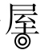
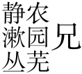

寄野兄：
四日寄小说稿一篇，想已到。此地的邮局颇特别，文稿不能援印刷品例，须当作信的。此后又寄一信，忘记了日子。
今日看见几张《中央副刊》[55]，托罗茨基的书，已经译傅东华[56]译载了不少了，似乎已译完。我想，这种书籍，中国有两种译本就怕很难销售。你的译文如果进行未多，似乎还不如中止。但这也不过是我一个人的意见。
我在厦门时，很受几个“现代”派的人排挤，我离开的原因，一半也在此。但我为从北京请去的教员留面子，秘而不说。不料其中之一[57]，终于在那里也站不住，已经钻到此地来做教授。此辈的阴险性质是不会改变的，自然不久还是排挤，营私。我在此的教务，功课，已经够多的了，那可以再加上防暗箭，淘闲气。所以我决计于二三日内辞去一切职务，离开中大。
此后何往，还未定；或者仍暂留此地，改定《小约翰》，俟暑假后再说。因为此刻开学已久已无处可以教书，我也想暂时不教书，休息一时再说，这一年来，实在忙得太苦了。来信可寄“广州芳草街四十四号二楼北新书

”（非局字）收转。书籍亦径寄“北新书屋”收。这是一间小楼，卖未名社和北新局出板品的地方。《莽原》第五六期各十本及给我之各二本，今天收到了。广东没有文艺书出版，所以外来之品，消场还好。《象牙之塔》卖完了，连样本都买了去。
这里现亦大讨其赤[58]，中大学生被捕者有四十余人，别处我不知道，报上亦不大纪载。其实这里本来一点不赤，商人之势力颇大，或者远在北京之上。被捕者盖大抵想赤之人而已。也有冤枉的，这几天放了几个。
再谈。
迅 四，二十，夜

均此不另。注 释
[55] 《中央副刊》 指武汉出版的《中央日报》的副刊，当时由孙伏园编辑。该刊曾连载托洛茨基《文学和革命》的译文。
[56] 傅东华（1893—1971） 浙江金华人，翻译家。当时是上海复旦大学、暨南大学国文系教授。
[57] 指顾颉刚。他于1927年4月18日到达中山大学。
[58] 大讨其赤 指1927年国民党“四一二”反共政变后，在广州相继发生的“四一五”搜捕、屠杀共产党人和革命人士的事件。计逮捕二千余人，其中杀害二百多人。